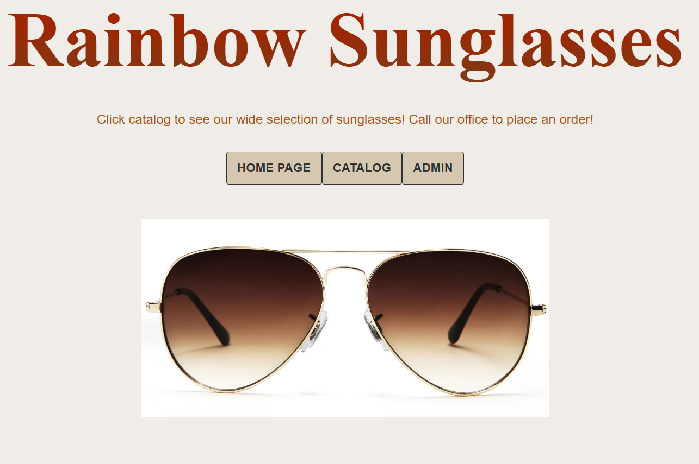
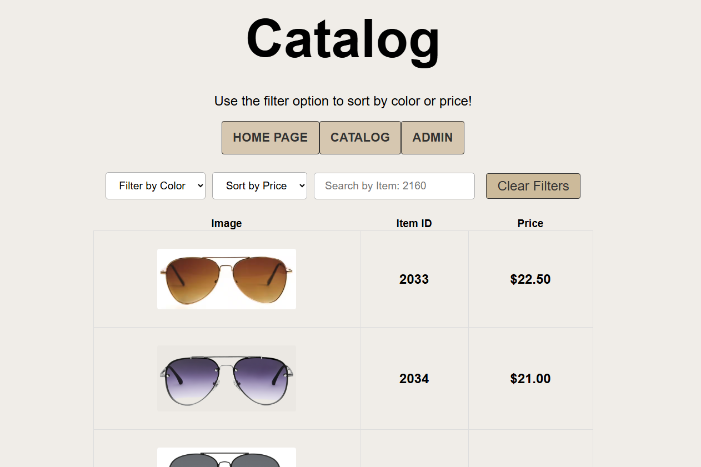
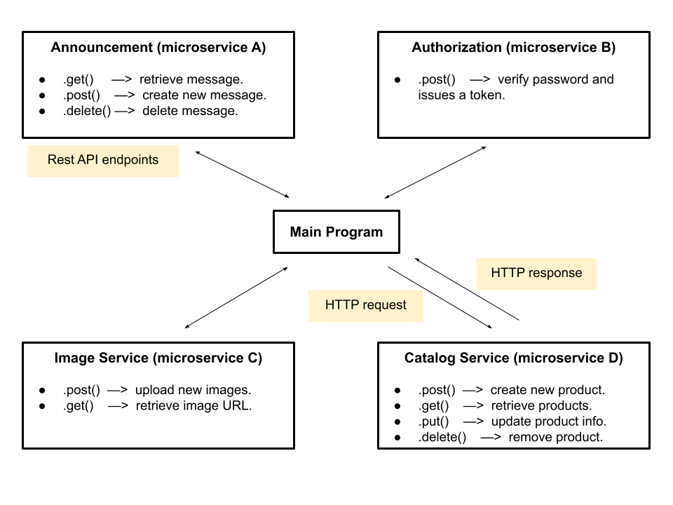
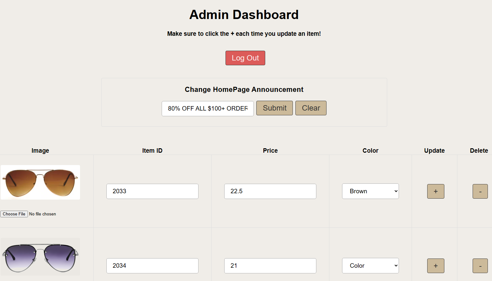

Microservice SPA: MERN Stack
The Microservice Catalog App is a full stack distributed system featuring a React UI
and four decoupled Node.js/Express microservices. The communication occurs via a RESTful
HTTP/JSON interface, leveraging MongoDB for NoSQL data persistence and service logic.
The application provides a comprehensive suite for browsing, creating, updating, and
deleting records with real-time database synchronization. This project demonstrates
distributed system design, NoSQL data modeling, and the implementation of independent
service communication within a containerized ecosystem.
Architecture Overview
- Announcement Banner - Microservice A: External integration providing standardized dynamic content. Consumed via REST API endpoints for seamless site-wide updates. Author: Antonio E. Olaguer II.
- Token Authentication - Microservice B: Manages administrative authorization and protects sensitive operations. Implements secure token-based communication to restrict access to site promotions and product management.
- MongoDB Image Service - Microservice C: Specifically optimized for high-resolution product imagery. Handles the upload pipeline and asset delivery to ensure low latency for image-heavy catalog views.
- MongoDB Catalog - Microservice D: The core logic service for database integrity. Manages CRUD operations, including record addition, deletion, and categorical sorting to maintain real-time inventory data.